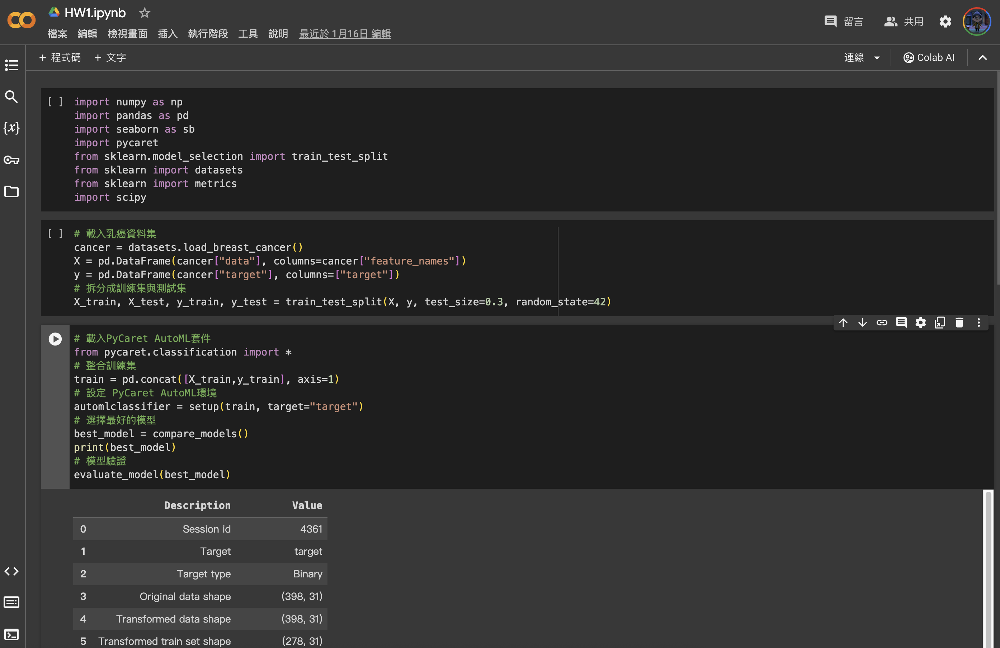
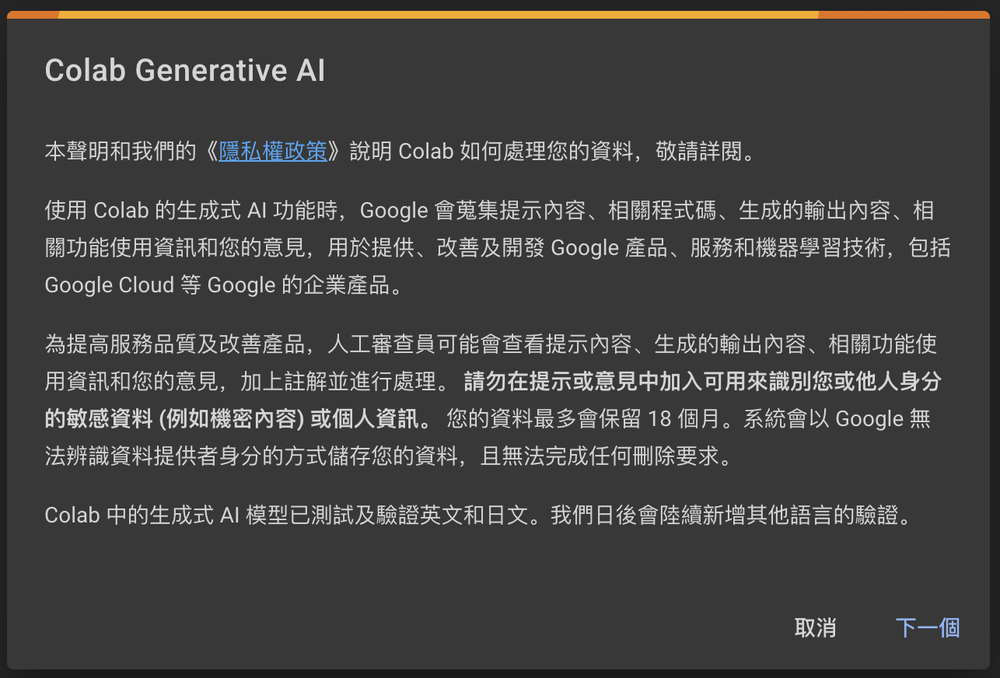
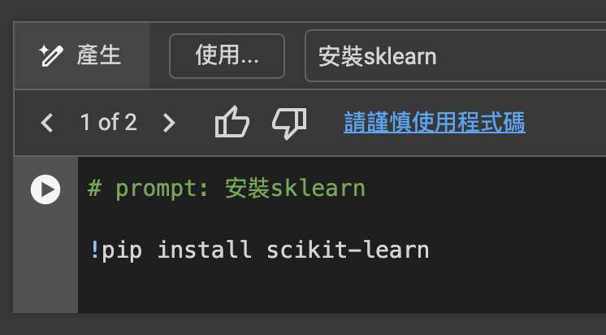
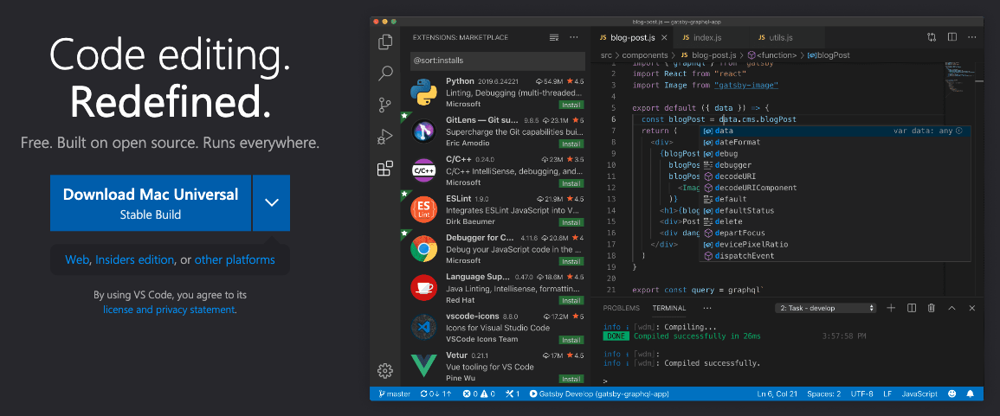
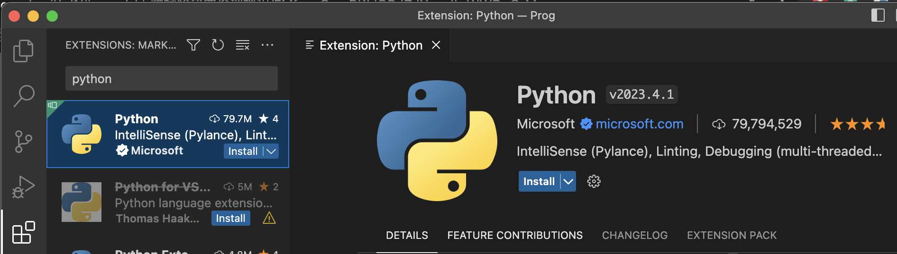

1. Environment Setting
Basic Setup
Python vs. Python IDE
Python: Core/Kernel (engine) 
Python vs. Python IDE
Python IDE: User interface IDE (Dashboard)
Ex. VS Code, PyCharm

plot of chunk unnamed-chunk-2
Work in the Cloud
- You can use Google Colab with Jupyter notebook.
- If you are not familiar with Python and Python IDE, and are able to work in the cloud.
- Jupyter notebook is a really good python interface for data analysis.
- Check the document for more information
Google Colab Interface
Google Colab Step by Step
Google “Colab”
Click the first link with “Google Colab” and from Google
Click “New Notebook” (“新增筆記本”) in the bottom left corner
Google Colab Markdown
File name
Code
Text
AI!
Google Generative AI


Google Colab Hands-on
- 打開Google Colab
- 新增一個筆記本
- 新增一個程式碼區塊（如果沒有的話）
- 在程式碼區塊輸入1+，按左手邊的三角形執行按鈕（Play）
- 觀察結果
Libraries
Python and Python Library (Packages)
Python: Core/Kernel (iPhone)

Python and Python Library (Packages)
Python Library: Applications, Add-on (APP)

Python = Base + Other Libraries
Install Libraries
!pip3install“package names”
- Google Colab has multiple build-in packages, you can check in the notebook
Package Version Location Installer
---------------------------- ----------- ------------------------------------------------------------------------------- ---------
absl-py 1.4.0 /Library/Frameworks/Python.framework/Versions/3.11/lib/python3.11/site-packages pip
adjustText 0.8 /Library/Frameworks/Python.framework/Versions/3.11/lib/python3.11/site-packages pip
alembic 1.13.1 /Library/Frameworks/Python.framework/Versions/3.11/lib/python3.11/site-packages pip
anyio 3.6.2 /Library/Frameworks/Python.framework/Versions/3.11/lib/python3.11/site-packages pip
appnope 0.1.3 /Library/Frameworks/Python.framework/Versions/3.11/lib/python3.11/site-packages pip
argon2-cffi 21.3.0 /Library/Frameworks/Python.framework/Versions/3.11/lib/python3.11/site-packages pip
argon2-cffi-bindings 21.2.0 /Library/Frameworks/Python.framework/Versions/3.11/lib/python3.11/site-packages pip
arrow 1.2.3 /Library/Frameworks/Python.framework/Versions/3.11/lib/python3.11/site-packages pip
asttokens 2.2.1 /Library/Frameworks/Python.framework/Versions/3.11/lib/python3.11/site-packages pip
astunparse 1.6.3 /Library/Frameworks/Python.framework/Versions/3.11/lib/python3.11/site-packages pip
attrs 22.2.0 /Library/Frameworks/Python.framework/Versions/3.11/lib/python3.11/site-packages pip
Authlib 1.3.0 /Library/Frameworks/Python.framework/Versions/3.11/lib/python3.11/site-packages pip
autokeras 2.0.0 /Library/Frameworks/Python.framework/Versions/3.11/lib/python3.11/site-packages pip
backcall 0.2.0 /Library/Frameworks/Python.framework/Versions/3.11/lib/python3.11/site-packages pip
beautifulsoup4 4.11.2 /Library/Frameworks/Python.framework/Versions/3.11/lib/python3.11/site-packages pip
bioinfokit 2.1.0 /Library/Frameworks/Python.framework/Versions/3.11/lib/python3.11/site-packages
bleach 6.0.0 /Library/Frameworks/Python.framework/Versions/3.11/lib/python3.11/site-packages pip
blinker 1.7.0 /Library/Frameworks/Python.framework/Versions/3.11/lib/python3.11/site-packages pip
builtwith 1.3.4 /Library/Frameworks/Python.framework/Versions/3.11/lib/python3.11/site-packages pip
cachetools 5.3.0 /Library/Frameworks/Python.framework/Versions/3.11/lib/python3.11/site-packages pip
calmap 0.0.11 /Library/Frameworks/Python.framework/Versions/3.11/lib/python3.11/site-packages pip
catboost 1.2.3 /Library/Frameworks/Python.framework/Versions/3.11/lib/python3.11/site-packages pip
category-encoders 2.6.3 /Library/Frameworks/Python.framework/Versions/3.11/lib/python3.11/site-packages pip
certifi 2023.5.7 /Library/Frameworks/Python.framework/Versions/3.11/lib/python3.11/site-packages pip
cffi 1.15.1 /Library/Frameworks/Python.framework/Versions/3.11/lib/python3.11/site-packages pip
charset-normalizer 3.1.0 /Library/Frameworks/Python.framework/Versions/3.11/lib/python3.11/site-packages pip
click 8.1.7 /Library/Frameworks/Python.framework/Versions/3.11/lib/python3.11/site-packages pip
cloudpickle 3.0.0 /Library/Frameworks/Python.framework/Versions/3.11/lib/python3.11/site-packages pip
colorlog 6.8.2 /Library/Frameworks/Python.framework/Versions/3.11/lib/python3.11/site-packages pip
colour 0.1.5 /Library/Frameworks/Python.framework/Versions/3.11/lib/python3.11/site-packages pip
comm 0.1.2 /Library/Frameworks/Python.framework/Versions/3.11/lib/python3.11/site-packages pip
contourpy 1.0.7 /Library/Frameworks/Python.framework/Versions/3.11/lib/python3.11/site-packages pip
cryptography 42.0.2 /Library/Frameworks/Python.framework/Versions/3.11/lib/python3.11/site-packages pip
cycler 0.11.0 /Library/Frameworks/Python.framework/Versions/3.11/lib/python3.11/site-packages pip
Cython 3.0.9 /Library/Frameworks/Python.framework/Versions/3.11/lib/python3.11/site-packages pip
dash 2.16.1 /Library/Frameworks/Python.framework/Versions/3.11/lib/python3.11/site-packages pip
dash-core-components 2.0.0 /Library/Frameworks/Python.framework/Versions/3.11/lib/python3.11/site-packages pip
dash-html-components 2.0.0 /Library/Frameworks/Python.framework/Versions/3.11/lib/python3.11/site-packages pip
dash-table 5.0.0 /Library/Frameworks/Python.framework/Versions/3.11/lib/python3.11/site-packages pip
dask 2024.5.0 /Library/Frameworks/Python.framework/Versions/3.11/lib/python3.11/site-packages pip
dataclasses-json 0.5.14 /Library/Frameworks/Python.framework/Versions/3.11/lib/python3.11/site-packages pip
DateTime 5.4 /Library/Frameworks/Python.framework/Versions/3.11/lib/python3.11/site-packages pip
debugpy 1.6.6 /Library/Frameworks/Python.framework/Versions/3.11/lib/python3.11/site-packages pip
decorator 5.1.1 /Library/Frameworks/Python.framework/Versions/3.11/lib/python3.11/site-packages pip
defusedxml 0.7.1 /Library/Frameworks/Python.framework/Versions/3.11/lib/python3.11/site-packages pip
deprecation 2.1.0 /Library/Frameworks/Python.framework/Versions/3.11/lib/python3.11/site-packages pip
dm-tree 0.1.8 /Library/Frameworks/Python.framework/Versions/3.11/lib/python3.11/site-packages pip
dtreeviz 2.2.2 /Library/Frameworks/Python.framework/Versions/3.11/lib/python3.11/site-packages pip
einops 0.6.1 /Library/Frameworks/Python.framework/Versions/3.11/lib/python3.11/site-packages pip
et-xmlfile 1.1.0 /Library/Frameworks/Python.framework/Versions/3.11/lib/python3.11/site-packages pip
executing 1.2.0 /Library/Frameworks/Python.framework/Versions/3.11/lib/python3.11/site-packages pip
fastjsonschema 2.16.3 /Library/Frameworks/Python.framework/Versions/3.11/lib/python3.11/site-packages pip
filelock 3.12.2 /Library/Frameworks/Python.framework/Versions/3.11/lib/python3.11/site-packages pip
Flask 3.0.2 /Library/Frameworks/Python.framework/Versions/3.11/lib/python3.11/site-packages pip
flatbuffers 24.3.25 /Library/Frameworks/Python.framework/Versions/3.11/lib/python3.11/site-packages pip
fonttools 4.39.0 /Library/Frameworks/Python.framework/Versions/3.11/lib/python3.11/site-packages pip
fqdn 1.5.1 /Library/Frameworks/Python.framework/Versions/3.11/lib/python3.11/site-packages pip
fsspec 2024.3.1 /Library/Frameworks/Python.framework/Versions/3.11/lib/python3.11/site-packages pip
gast 0.4.0 /Library/Frameworks/Python.framework/Versions/3.11/lib/python3.11/site-packages pip
gdown 5.0.1 /Library/Frameworks/Python.framework/Versions/3.11/lib/python3.11/site-packages pip
google-api-core 2.15.0 /Library/Frameworks/Python.framework/Versions/3.11/lib/python3.11/site-packages pip
google-api-python-client 2.115.0 /Library/Frameworks/Python.framework/Versions/3.11/lib/python3.11/site-packages pip
google-auth 2.17.3 /Library/Frameworks/Python.framework/Versions/3.11/lib/python3.11/site-packages pip
google-auth-httplib2 0.2.0 /Library/Frameworks/Python.framework/Versions/3.11/lib/python3.11/site-packages pip
google-auth-oauthlib 1.0.0 /Library/Frameworks/Python.framework/Versions/3.11/lib/python3.11/site-packages pip
google-pasta 0.2.0 /Library/Frameworks/Python.framework/Versions/3.11/lib/python3.11/site-packages pip
googleapis-common-protos 1.62.0 /Library/Frameworks/Python.framework/Versions/3.11/lib/python3.11/site-packages pip
googledrivedownloader 0.4 /Library/Frameworks/Python.framework/Versions/3.11/lib/python3.11/site-packages pip
graphviz 0.20.3 /Library/Frameworks/Python.framework/Versions/3.11/lib/python3.11/site-packages pip
greenlet 3.0.3 /Library/Frameworks/Python.framework/Versions/3.11/lib/python3.11/site-packages pip
grpcio 1.54.0 /Library/Frameworks/Python.framework/Versions/3.11/lib/python3.11/site-packages pip
gspread 6.0.0 /Library/Frameworks/Python.framework/Versions/3.11/lib/python3.11/site-packages pip
h5py 3.10.0 /Library/Frameworks/Python.framework/Versions/3.11/lib/python3.11/site-packages pip
httplib2 0.22.0 /Library/Frameworks/Python.framework/Versions/3.11/lib/python3.11/site-packages pip
huggingface-hub 0.23.0 /Library/Frameworks/Python.framework/Versions/3.11/lib/python3.11/site-packages pip
idna 3.4 /Library/Frameworks/Python.framework/Versions/3.11/lib/python3.11/site-packages pip
imageio 2.34.1 /Library/Frameworks/Python.framework/Versions/3.11/lib/python3.11/site-packages pip
imbalanced-learn 0.12.0 /Library/Frameworks/Python.framework/Versions/3.11/lib/python3.11/site-packages pip
importlib_metadata 7.1.0 /Library/Frameworks/Python.framework/Versions/3.11/lib/python3.11/site-packages pip
iniconfig 2.0.0 /Library/Frameworks/Python.framework/Versions/3.11/lib/python3.11/site-packages pip
ipykernel 6.21.3 /Library/Frameworks/Python.framework/Versions/3.11/lib/python3.11/site-packages pip
ipython 8.11.0 /Library/Frameworks/Python.framework/Versions/3.11/lib/python3.11/site-packages pip
ipython-genutils 0.2.0 /Library/Frameworks/Python.framework/Versions/3.11/lib/python3.11/site-packages pip
ipywidgets 8.0.4 /Library/Frameworks/Python.framework/Versions/3.11/lib/python3.11/site-packages pip
isoduration 20.11.0 /Library/Frameworks/Python.framework/Versions/3.11/lib/python3.11/site-packages pip
itsdangerous 2.1.2 /Library/Frameworks/Python.framework/Versions/3.11/lib/python3.11/site-packages pip
jax 0.4.8 /Library/Frameworks/Python.framework/Versions/3.11/lib/python3.11/site-packages pip
jedi 0.18.2 /Library/Frameworks/Python.framework/Versions/3.11/lib/python3.11/site-packages pip
Jinja2 3.1.2 /Library/Frameworks/Python.framework/Versions/3.11/lib/python3.11/site-packages pip
joblib 1.2.0 /Library/Frameworks/Python.framework/Versions/3.11/lib/python3.11/site-packages pip
jsonpointer 2.3 /Library/Frameworks/Python.framework/Versions/3.11/lib/python3.11/site-packages pip
jsonschema 4.17.3 /Library/Frameworks/Python.framework/Versions/3.11/lib/python3.11/site-packages pip
jupyter 1.0.0 /Library/Frameworks/Python.framework/Versions/3.11/lib/python3.11/site-packages pip
jupyter_client 8.0.3 /Library/Frameworks/Python.framework/Versions/3.11/lib/python3.11/site-packages pip
jupyter-console 6.6.3 /Library/Frameworks/Python.framework/Versions/3.11/lib/python3.11/site-packages pip
jupyter_core 5.2.0 /Library/Frameworks/Python.framework/Versions/3.11/lib/python3.11/site-packages pip
jupyter-events 0.6.3 /Library/Frameworks/Python.framework/Versions/3.11/lib/python3.11/site-packages pip
jupyter_server 2.4.0 /Library/Frameworks/Python.framework/Versions/3.11/lib/python3.11/site-packages pip
jupyter_server_terminals 0.4.4 /Library/Frameworks/Python.framework/Versions/3.11/lib/python3.11/site-packages pip
jupyterlab-pygments 0.2.2 /Library/Frameworks/Python.framework/Versions/3.11/lib/python3.11/site-packages pip
jupyterlab-widgets 3.0.5 /Library/Frameworks/Python.framework/Versions/3.11/lib/python3.11/site-packages pip
kagglehub 0.2.2 /Library/Frameworks/Python.framework/Versions/3.11/lib/python3.11/site-packages pip
kaleido 0.2.1 /Library/Frameworks/Python.framework/Versions/3.11/lib/python3.11/site-packages pip
keras 3.1.1 /Library/Frameworks/Python.framework/Versions/3.11/lib/python3.11/site-packages pip
keras-core 0.1.7 /Library/Frameworks/Python.framework/Versions/3.11/lib/python3.11/site-packages pip
keras-nlp 0.8.2 /Library/Frameworks/Python.framework/Versions/3.11/lib/python3.11/site-packages pip
keras-tuner 1.4.7 /Library/Frameworks/Python.framework/Versions/3.11/lib/python3.11/site-packages pip
kiwisolver 1.4.4 /Library/Frameworks/Python.framework/Versions/3.11/lib/python3.11/site-packages pip
kt-legacy 1.0.5 /Library/Frameworks/Python.framework/Versions/3.11/lib/python3.11/site-packages pip
lazy_loader 0.4 /Library/Frameworks/Python.framework/Versions/3.11/lib/python3.11/site-packages pip
libclang 16.0.0 /Library/Frameworks/Python.framework/Versions/3.11/lib/python3.11/site-packages pip
lightgbm 4.3.0 /Library/Frameworks/Python.framework/Versions/3.11/lib/python3.11/site-packages pip
llvmlite 0.42.0 /Library/Frameworks/Python.framework/Versions/3.11/lib/python3.11/site-packages pip
locket 1.0.0 /Library/Frameworks/Python.framework/Versions/3.11/lib/python3.11/site-packages pip
Mako 1.3.2 /Library/Frameworks/Python.framework/Versions/3.11/lib/python3.11/site-packages pip
Markdown 3.4.3 /Library/Frameworks/Python.framework/Versions/3.11/lib/python3.11/site-packages pip
markdown-it-py 3.0.0 /Library/Frameworks/Python.framework/Versions/3.11/lib/python3.11/site-packages pip
MarkupSafe 2.1.2 /Library/Frameworks/Python.framework/Versions/3.11/lib/python3.11/site-packages pip
marshmallow 3.20.2 /Library/Frameworks/Python.framework/Versions/3.11/lib/python3.11/site-packages pip
matplotlib 3.7.1 /Library/Frameworks/Python.framework/Versions/3.11/lib/python3.11/site-packages pip
matplotlib-inline 0.1.6 /Library/Frameworks/Python.framework/Versions/3.11/lib/python3.11/site-packages pip
matplotlib-venn 0.11.9 /Library/Frameworks/Python.framework/Versions/3.11/lib/python3.11/site-packages pip
mdurl 0.1.2 /Library/Frameworks/Python.framework/Versions/3.11/lib/python3.11/site-packages pip
missingno 0.5.2 /Library/Frameworks/Python.framework/Versions/3.11/lib/python3.11/site-packages pip
mistune 2.0.5 /Library/Frameworks/Python.framework/Versions/3.11/lib/python3.11/site-packages pip
ml-dtypes 0.3.2 /Library/Frameworks/Python.framework/Versions/3.11/lib/python3.11/site-packages pip
mljar-supervised 1.1.6 /Library/Frameworks/Python.framework/Versions/3.11/lib/python3.11/site-packages pip
mpmath 1.3.0 /Library/Frameworks/Python.framework/Versions/3.11/lib/python3.11/site-packages pip
mypy-extensions 1.0.0 /Library/Frameworks/Python.framework/Versions/3.11/lib/python3.11/site-packages pip
namex 0.0.7 /Library/Frameworks/Python.framework/Versions/3.11/lib/python3.11/site-packages pip
nbclassic 0.5.3 /Library/Frameworks/Python.framework/Versions/3.11/lib/python3.11/site-packages pip
nbclient 0.7.2 /Library/Frameworks/Python.framework/Versions/3.11/lib/python3.11/site-packages pip
nbconvert 7.2.9 /Library/Frameworks/Python.framework/Versions/3.11/lib/python3.11/site-packages pip
nbformat 5.7.3 /Library/Frameworks/Python.framework/Versions/3.11/lib/python3.11/site-packages pip
nest-asyncio 1.5.6 /Library/Frameworks/Python.framework/Versions/3.11/lib/python3.11/site-packages pip
networkx 3.1 /Library/Frameworks/Python.framework/Versions/3.11/lib/python3.11/site-packages pip
notebook 6.5.3 /Library/Frameworks/Python.framework/Versions/3.11/lib/python3.11/site-packages pip
notebook_shim 0.2.2 /Library/Frameworks/Python.framework/Versions/3.11/lib/python3.11/site-packages pip
numba 0.59.1 /Library/Frameworks/Python.framework/Versions/3.11/lib/python3.11/site-packages pip
numpy 1.24.3 /Library/Frameworks/Python.framework/Versions/3.11/lib/python3.11/site-packages pip
oauth2client 4.1.3 /Library/Frameworks/Python.framework/Versions/3.11/lib/python3.11/site-packages pip
oauthlib 3.2.2 /Library/Frameworks/Python.framework/Versions/3.11/lib/python3.11/site-packages pip
opencv-python 4.9.0.80 /Library/Frameworks/Python.framework/Versions/3.11/lib/python3.11/site-packages pip
openpyxl 3.1.2 /Library/Frameworks/Python.framework/Versions/3.11/lib/python3.11/site-packages pip
opt-einsum 3.3.0 /Library/Frameworks/Python.framework/Versions/3.11/lib/python3.11/site-packages pip
optree 0.11.0 /Library/Frameworks/Python.framework/Versions/3.11/lib/python3.11/site-packages pip
optuna 3.6.0 /Library/Frameworks/Python.framework/Versions/3.11/lib/python3.11/site-packages pip
orjson 3.10.0 /Library/Frameworks/Python.framework/Versions/3.11/lib/python3.11/site-packages pip
packaging 23.0 /Library/Frameworks/Python.framework/Versions/3.11/lib/python3.11/site-packages pip
pandas 2.1.4 /Library/Frameworks/Python.framework/Versions/3.11/lib/python3.11/site-packages pip
pandocfilters 1.5.0 /Library/Frameworks/Python.framework/Versions/3.11/lib/python3.11/site-packages pip
parso 0.8.3 /Library/Frameworks/Python.framework/Versions/3.11/lib/python3.11/site-packages pip
partd 1.4.2 /Library/Frameworks/Python.framework/Versions/3.11/lib/python3.11/site-packages pip
patsy 0.5.3 /Library/Frameworks/Python.framework/Versions/3.11/lib/python3.11/site-packages pip
pexpect 4.8.0 /Library/Frameworks/Python.framework/Versions/3.11/lib/python3.11/site-packages pip
pickleshare 0.7.5 /Library/Frameworks/Python.framework/Versions/3.11/lib/python3.11/site-packages pip
Pillow 9.4.0 /Library/Frameworks/Python.framework/Versions/3.11/lib/python3.11/site-packages pip
pip 24.0 /Library/Frameworks/Python.framework/Versions/3.11/lib/python3.11/site-packages pip
platformdirs 3.1.0 /Library/Frameworks/Python.framework/Versions/3.11/lib/python3.11/site-packages pip
plotly 5.20.0 /Library/Frameworks/Python.framework/Versions/3.11/lib/python3.11/site-packages pip
plotly-resampler 0.10.0 /Library/Frameworks/Python.framework/Versions/3.11/lib/python3.11/site-packages pip
pluggy 1.4.0 /Library/Frameworks/Python.framework/Versions/3.11/lib/python3.11/site-packages pip
pmdarima 2.0.4 /Library/Frameworks/Python.framework/Versions/3.11/lib/python3.11/site-packages pip
prometheus-client 0.16.0 /Library/Frameworks/Python.framework/Versions/3.11/lib/python3.11/site-packages pip
prompt-toolkit 3.0.38 /Library/Frameworks/Python.framework/Versions/3.11/lib/python3.11/site-packages pip
protobuf 4.23.0 /Library/Frameworks/Python.framework/Versions/3.11/lib/python3.11/site-packages pip
psutil 5.9.4 /Library/Frameworks/Python.framework/Versions/3.11/lib/python3.11/site-packages pip
ptyprocess 0.7.0 /Library/Frameworks/Python.framework/Versions/3.11/lib/python3.11/site-packages pip
pure-eval 0.2.2 /Library/Frameworks/Python.framework/Versions/3.11/lib/python3.11/site-packages pip
pyasn1 0.5.0 /Library/Frameworks/Python.framework/Versions/3.11/lib/python3.11/site-packages pip
pyasn1-modules 0.3.0 /Library/Frameworks/Python.framework/Versions/3.11/lib/python3.11/site-packages pip
pycaret 3.3.0 /Library/Frameworks/Python.framework/Versions/3.11/lib/python3.11/site-packages pip
pycparser 2.21 /Library/Frameworks/Python.framework/Versions/3.11/lib/python3.11/site-packages pip
pydot 1.4.2 /Library/Frameworks/Python.framework/Versions/3.11/lib/python3.11/site-packages pip
PyDrive 1.3.1 /Library/Frameworks/Python.framework/Versions/3.11/lib/python3.11/site-packages pip
Pygments 2.14.0 /Library/Frameworks/Python.framework/Versions/3.11/lib/python3.11/site-packages pip
pyod 1.1.3 /Library/Frameworks/Python.framework/Versions/3.11/lib/python3.11/site-packages pip
pyparsing 3.0.9 /Library/Frameworks/Python.framework/Versions/3.11/lib/python3.11/site-packages pip
pyrsistent 0.19.3 /Library/Frameworks/Python.framework/Versions/3.11/lib/python3.11/site-packages pip
PySocks 1.7.1 /Library/Frameworks/Python.framework/Versions/3.11/lib/python3.11/site-packages pip
pytest 8.1.1 /Library/Frameworks/Python.framework/Versions/3.11/lib/python3.11/site-packages pip
python-dateutil 2.8.2 /Library/Frameworks/Python.framework/Versions/3.11/lib/python3.11/site-packages pip
python-json-logger 2.0.7 /Library/Frameworks/Python.framework/Versions/3.11/lib/python3.11/site-packages pip
python-twitter-v2 0.9.0 /Library/Frameworks/Python.framework/Versions/3.11/lib/python3.11/site-packages pip
pytz 2022.7.1 /Library/Frameworks/Python.framework/Versions/3.11/lib/python3.11/site-packages pip
PyYAML 5.3.1 /Library/Frameworks/Python.framework/Versions/3.11/lib/python3.11/site-packages pip
pyzmq 25.0.0 /Library/Frameworks/Python.framework/Versions/3.11/lib/python3.11/site-packages pip
qtconsole 5.4.0 /Library/Frameworks/Python.framework/Versions/3.11/lib/python3.11/site-packages pip
QtPy 2.3.0 /Library/Frameworks/Python.framework/Versions/3.11/lib/python3.11/site-packages pip
regex 2023.12.25 /Library/Frameworks/Python.framework/Versions/3.11/lib/python3.11/site-packages pip
requests 2.30.0 /Library/Frameworks/Python.framework/Versions/3.11/lib/python3.11/site-packages pip
requests-oauthlib 1.3.1 /Library/Frameworks/Python.framework/Versions/3.11/lib/python3.11/site-packages pip
retrying 1.3.4 /Library/Frameworks/Python.framework/Versions/3.11/lib/python3.11/site-packages pip
rfc3339-validator 0.1.4 /Library/Frameworks/Python.framework/Versions/3.11/lib/python3.11/site-packages pip
rfc3986-validator 0.1.1 /Library/Frameworks/Python.framework/Versions/3.11/lib/python3.11/site-packages pip
rich 13.7.1 /Library/Frameworks/Python.framework/Versions/3.11/lib/python3.11/site-packages pip
rsa 4.9 /Library/Frameworks/Python.framework/Versions/3.11/lib/python3.11/site-packages pip
safetensors 0.4.3 /Library/Frameworks/Python.framework/Versions/3.11/lib/python3.11/site-packages pip
schemdraw 0.15 /Library/Frameworks/Python.framework/Versions/3.11/lib/python3.11/site-packages pip
scikit-base 0.7.5 /Library/Frameworks/Python.framework/Versions/3.11/lib/python3.11/site-packages pip
scikit-image 0.23.2 /Library/Frameworks/Python.framework/Versions/3.11/lib/python3.11/site-packages pip
scikit-learn 1.4.1.post1 /Library/Frameworks/Python.framework/Versions/3.11/lib/python3.11/site-packages pip
scikit-plot 0.3.7 /Library/Frameworks/Python.framework/Versions/3.11/lib/python3.11/site-packages pip
scipy 1.10.1 /Library/Frameworks/Python.framework/Versions/3.11/lib/python3.11/site-packages pip
seaborn 0.12.2 /Library/Frameworks/Python.framework/Versions/3.11/lib/python3.11/site-packages pip
Send2Trash 1.8.0 /Library/Frameworks/Python.framework/Versions/3.11/lib/python3.11/site-packages pip
setuptools 65.5.0 /Library/Frameworks/Python.framework/Versions/3.11/lib/python3.11/site-packages pip
shap 0.45.0 /Library/Frameworks/Python.framework/Versions/3.11/lib/python3.11/site-packages pip
six 1.16.0 /Library/Frameworks/Python.framework/Versions/3.11/lib/python3.11/site-packages pip
sktime 0.28.0 /Library/Frameworks/Python.framework/Versions/3.11/lib/python3.11/site-packages pip
slicer 0.0.7 /Library/Frameworks/Python.framework/Versions/3.11/lib/python3.11/site-packages pip
sniffio 1.3.0 /Library/Frameworks/Python.framework/Versions/3.11/lib/python3.11/site-packages pip
soupsieve 2.4 /Library/Frameworks/Python.framework/Versions/3.11/lib/python3.11/site-packages pip
SQLAlchemy 2.0.29 /Library/Frameworks/Python.framework/Versions/3.11/lib/python3.11/site-packages pip
stack-data 0.6.2 /Library/Frameworks/Python.framework/Versions/3.11/lib/python3.11/site-packages pip
statsmodels 0.13.5 /Library/Frameworks/Python.framework/Versions/3.11/lib/python3.11/site-packages pip
StrEnum 0.4.15 /Library/Frameworks/Python.framework/Versions/3.11/lib/python3.11/site-packages pip
sympy 1.12 /Library/Frameworks/Python.framework/Versions/3.11/lib/python3.11/site-packages pip
tab-transformer-pytorch 0.2.6 /Library/Frameworks/Python.framework/Versions/3.11/lib/python3.11/site-packages pip
tableone 0.7.12 /Library/Frameworks/Python.framework/Versions/3.11/lib/python3.11/site-packages pip
tabulate 0.9.0 /Library/Frameworks/Python.framework/Versions/3.11/lib/python3.11/site-packages pip
tbats 1.1.3 /Library/Frameworks/Python.framework/Versions/3.11/lib/python3.11/site-packages pip
tenacity 8.2.3 /Library/Frameworks/Python.framework/Versions/3.11/lib/python3.11/site-packages pip
tensorboard 2.16.2 /Library/Frameworks/Python.framework/Versions/3.11/lib/python3.11/site-packages pip
tensorboard-data-server 0.7.0 /Library/Frameworks/Python.framework/Versions/3.11/lib/python3.11/site-packages pip
tensorflow 2.16.1 /Library/Frameworks/Python.framework/Versions/3.11/lib/python3.11/site-packages pip
tensorflow-addons 0.21.0 /Library/Frameworks/Python.framework/Versions/3.11/lib/python3.11/site-packages pip
tensorflow-estimator 2.13.0 /Library/Frameworks/Python.framework/Versions/3.11/lib/python3.11/site-packages pip
tensorflow-io-gcs-filesystem 0.32.0 /Library/Frameworks/Python.framework/Versions/3.11/lib/python3.11/site-packages pip
termcolor 2.3.0 /Library/Frameworks/Python.framework/Versions/3.11/lib/python3.11/site-packages pip
terminado 0.17.1 /Library/Frameworks/Python.framework/Versions/3.11/lib/python3.11/site-packages pip
textwrap3 0.9.2 /Library/Frameworks/Python.framework/Versions/3.11/lib/python3.11/site-packages pip
threadpoolctl 3.1.0 /Library/Frameworks/Python.framework/Versions/3.11/lib/python3.11/site-packages pip
tifffile 2024.5.10 /Library/Frameworks/Python.framework/Versions/3.11/lib/python3.11/site-packages pip
tinycss2 1.2.1 /Library/Frameworks/Python.framework/Versions/3.11/lib/python3.11/site-packages pip
tokenizers 0.19.1 /Library/Frameworks/Python.framework/Versions/3.11/lib/python3.11/site-packages pip
toolz 0.12.1 /Library/Frameworks/Python.framework/Versions/3.11/lib/python3.11/site-packages pip
torch 2.0.1 /Library/Frameworks/Python.framework/Versions/3.11/lib/python3.11/site-packages pip
torchaudio 2.0.2 /Library/Frameworks/Python.framework/Versions/3.11/lib/python3.11/site-packages pip
torchvision 0.15.2 /Library/Frameworks/Python.framework/Versions/3.11/lib/python3.11/site-packages pip
torchxrayvision 1.2.2 /Library/Frameworks/Python.framework/Versions/3.11/lib/python3.11/site-packages pip
tornado 6.2 /Library/Frameworks/Python.framework/Versions/3.11/lib/python3.11/site-packages pip
tqdm 4.66.1 /Library/Frameworks/Python.framework/Versions/3.11/lib/python3.11/site-packages pip
traitlets 5.9.0 /Library/Frameworks/Python.framework/Versions/3.11/lib/python3.11/site-packages pip
transformers 4.40.2 /Library/Frameworks/Python.framework/Versions/3.11/lib/python3.11/site-packages pip
tsdownsample 0.1.3 /Library/Frameworks/Python.framework/Versions/3.11/lib/python3.11/site-packages pip
typeguard 2.13.3 /Library/Frameworks/Python.framework/Versions/3.11/lib/python3.11/site-packages pip
typing_extensions 4.5.0 /Library/Frameworks/Python.framework/Versions/3.11/lib/python3.11/site-packages pip
typing-inspect 0.9.0 /Library/Frameworks/Python.framework/Versions/3.11/lib/python3.11/site-packages pip
tzdata 2024.1 /Library/Frameworks/Python.framework/Versions/3.11/lib/python3.11/site-packages pip
uri-template 1.2.0 /Library/Frameworks/Python.framework/Versions/3.11/lib/python3.11/site-packages pip
uritemplate 4.1.1 /Library/Frameworks/Python.framework/Versions/3.11/lib/python3.11/site-packages pip
urllib3 2.0.2 /Library/Frameworks/Python.framework/Versions/3.11/lib/python3.11/site-packages pip
wcwidth 0.2.6 /Library/Frameworks/Python.framework/Versions/3.11/lib/python3.11/site-packages pip
webcolors 1.12 /Library/Frameworks/Python.framework/Versions/3.11/lib/python3.11/site-packages pip
webencodings 0.5.1 /Library/Frameworks/Python.framework/Versions/3.11/lib/python3.11/site-packages pip
websocket-client 1.5.1 /Library/Frameworks/Python.framework/Versions/3.11/lib/python3.11/site-packages pip
Werkzeug 3.0.1 /Library/Frameworks/Python.framework/Versions/3.11/lib/python3.11/site-packages pip
wget 3.2 /Library/Frameworks/Python.framework/Versions/3.11/lib/python3.11/site-packages pip
wheel 0.40.0 /Library/Frameworks/Python.framework/Versions/3.11/lib/python3.11/site-packages pip
widgetsnbextension 4.0.5 /Library/Frameworks/Python.framework/Versions/3.11/lib/python3.11/site-packages pip
wordcloud 1.9.3 /Library/Frameworks/Python.framework/Versions/3.11/lib/python3.11/site-packages pip
wrapt 1.14.1 /Library/Frameworks/Python.framework/Versions/3.11/lib/python3.11/site-packages pip
wurlitzer 3.0.3 /Library/Frameworks/Python.framework/Versions/3.11/lib/python3.11/site-packages pip
xgboost 2.0.3 /Library/Frameworks/Python.framework/Versions/3.11/lib/python3.11/site-packages pip
xlrd 2.0.1 /Library/Frameworks/Python.framework/Versions/3.11/lib/python3.11/site-packages pip
xxhash 3.4.1 /Library/Frameworks/Python.framework/Versions/3.11/lib/python3.11/site-packages pip
yellowbrick 1.5 /Library/Frameworks/Python.framework/Versions/3.11/lib/python3.11/site-packages pip
zipp 3.18.1 /Library/Frameworks/Python.framework/Versions/3.11/lib/python3.11/site-packages pip
zope.interface 6.1 /Library/Frameworks/Python.framework/Versions/3.11/lib/python3.11/site-packages pip
[notice] A new release of pip is available: 24.0 -> 25.0.1
[notice] To update, run: pip install --upgrade pipImport libraries
We will use the following libraries in python for the first try.
pandas
Install libraries hands-on
- 在剛剛新增的Notebook中，輸入
!pip3 install pandas
Setup the environment on your own computer (for your reference)
Python installation
You can install python in different way. For someone who are not familiar with python, feel free to follow these steps:
- Download python 3.12 @ https://www.python.org/downloads/
- Install it by double click the installer
- Check if the installation success by typing
python3in CMD (Windows) or terminal (Mac or Linux) - If the Microsoft Shop is opened when typing
python3in CMD, check this solution
Libraries installation
In CMD (Windows) or terminal (Mac or Linux), type
pip3 install pandas jupyter seabornto install packages
Of course you can use conda or other method to install packages
Setup an IDE for data analysis
- If you are not familiar with python IDE, I recommend you to use VS Code with Jupyter notebook for data analysis.
- Jupyter notebook is a really good python interface for data analysis (of course including statistic).
- You can install and using Jupyter notebook in different ways.
We have installed
jupyterlibrary in the previous slidepip3 install jupyter
- Check the document for more instruction
1. Download and install VS Code
VS Code 
2. Check python and jupyter libraries
Make sure you have installed python and jupyter libraries (see previous slides)
@ Python
3. Install Python extension
In VS Code, click Extensions, search “python”, and install the extension
 Jupyter extension is also useful
4. Trust your workspace
Click trust and add the folder with codes in the trust workspace

5. Create a Jupyter Notebook
- by running the
>Create: New Jupyter Notebookcommand from the Command Palette (⇧⌘P) - by creating a new .ipynb file in your workspace